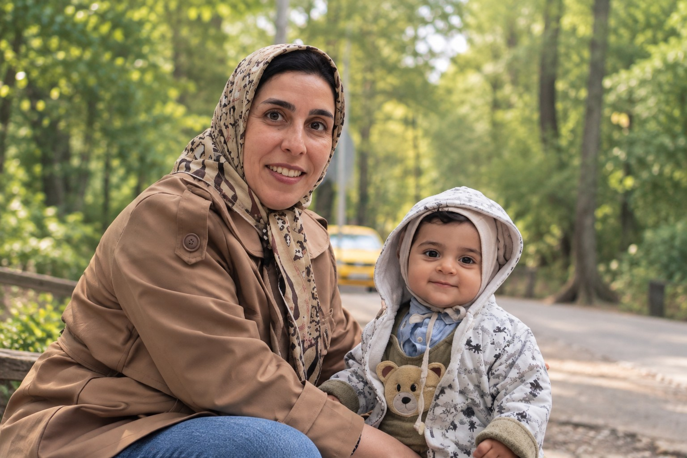

01
Product Analysis
Understanding needs, identifying the real problem, defining flows and turning scattered requirements into clear, executable product requirements.
- Requirement Analysis
- Process Design
- BPMN / UML
I’m Fatemeh Sedaghat, a Technical Product Owner, Product Analyst and Software Developer with more than 15 years of professional experience across software development, system analysis and enterprise products. I focus on turning complex problems into clear, scalable and executable solutions.

My career started in backend development and web systems, and gradually expanded into system analysis, requirement management and product ownership. This combination helps me connect business needs, technical constraints and the real user experience.
In recent years, I have worked on enterprise products, contact center solutions, VoIP and communication platforms. Transparency, accountability, professional processes and effective collaboration between business and technical teams are core principles in the way I work.
My core professional strength is the combination of technical and product experience.
Understanding needs, identifying the real problem, defining flows and turning scattered requirements into clear, executable product requirements.
Guiding product development with a simultaneous understanding of business goals, technical architecture and engineering capacity.
Hands-on experience in backend development, APIs and enterprise systems, with a focus on maintainability, reliability and scalability.
Using AI as a practical tool for analysis, decision support, productivity and creating measurable value in products and business workflows.
A short overview of the experiences that shaped my technical and product perspective.
Leading and contributing to the development of a voice and video contact center product from ideation to deployment and customer acquisition, with a focus on product analysis, process design and alignment between business and technical teams.
Managed an electronic service desk project used by electricity distribution companies, analyzed workflows and worked with ProcessMaker, BPMS and BPMN.
Developed web systems and REST APIs using Yii2 and MariaDB, with experience in microservice concepts and ORM.
System and web service analysis, backend and API development, service documentation and development of enterprise web systems.
Contributed to the design and development of Mashhad City Council systems, system analysis and implementation of web-based applications.
My capabilities are not just a list of tools. I focus on understanding the problem, making product decisions, designing the solution and helping move it toward technical delivery.
Guiding products from problem definition and requirement analysis through prioritization, team alignment and delivery.
Analyzing system structures, extracting processes and translating business needs into models that engineering teams can work with.
Hands-on experience developing web applications, APIs and data-driven enterprise systems.
Working with software engineering principles and tools that support maintainability, structure and effective delivery.
My software development background, combined with product ownership and analysis experience, helps me evaluate decisions from both business-value and technical-feasibility perspectives.
“A strong product emerges when real user needs, business logic and technical feasibility are considered together.”
For collaboration in product analysis, Technical Product Ownership, system design or product development, feel free to contact me by email.
fa.sedaghat@gmail.com